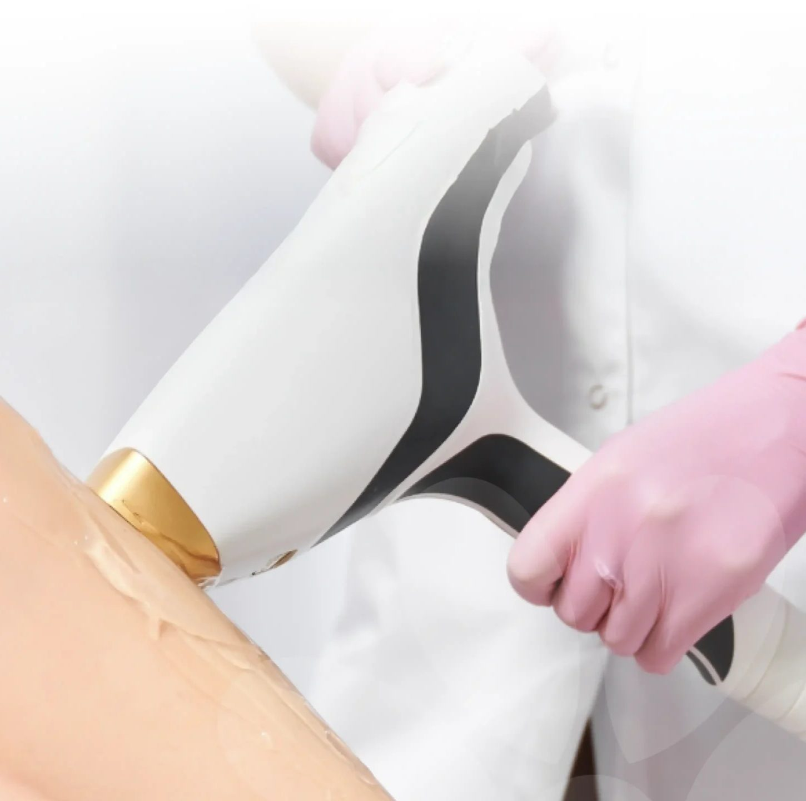
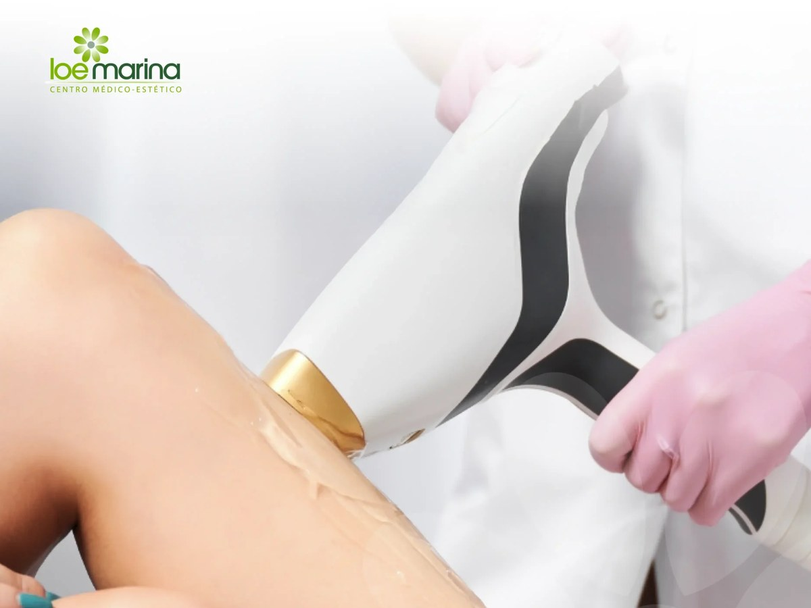
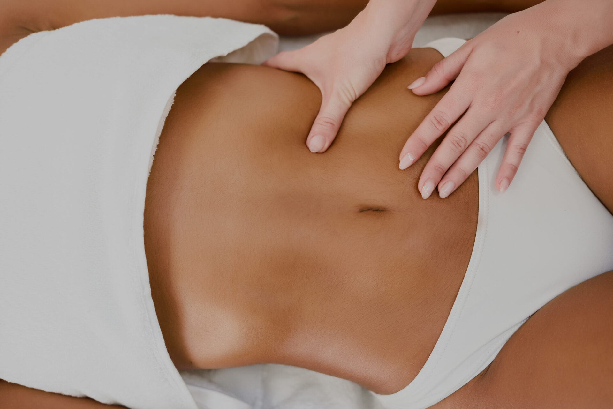

Luz pulsada intensa
Emite un espectro amplio de luz. Es versátil y resulta útil en pieles claras con vello oscuro y en zonas pequeñas o medianas. También es una buena puerta de entrada para quien empieza.
Trabajamos con IPL, láser de diodo y gran diodo para adaptar cada sesión a tu piel, tu vello y la zona a tratar. Valoración previa, parámetros personalizados y packs de 5 sesiones por zona desde 102,50 €.

La depilación láser se basa en la fototermólisis selectiva: el equipo emite luz que absorbe la melanina del pelo. Esa energía se convierte en calor, baja por el tallo hasta el folículo y daña las estructuras que generan vello nuevo, protegiendo la piel de alrededor con sistemas de enfriamiento.
El resultado es una reducción progresiva, notable y duradera del vello. Con cada sesión el pelo sale más fino, más claro y en menor cantidad, hasta que la zona queda prácticamente limpia y solo requiere algún retoque de mantenimiento.
¿Quieres profundizar? Lee nuestra guía completa de depilación láser.
No todas las pieles ni todos los vellos responden igual a la misma luz. Tener varias tecnologías nos permite elegir la más adecuada para ti en lugar de adaptar tu piel a una sola máquina.
Emite un espectro amplio de luz. Es versátil y resulta útil en pieles claras con vello oscuro y en zonas pequeñas o medianas. También es una buena puerta de entrada para quien empieza.
Una longitud de onda concreta que penetra hasta el folículo con gran precisión. Es el estándar actual por su eficacia, su comodidad gracias al enfriamiento y su seguridad en un rango amplio de fototipos.
Cabezal de mayor superficie para cubrir zonas extensas como piernas, espalda o pecho en menos tiempo, manteniendo la eficacia del diodo. Sesiones más cortas en áreas grandes.
La tecnología y los parámetros se deciden en la valoración según tu fototipo, el color y grosor del vello y la zona.
Precios claros, sin sorpresas. Cada pack incluye 5 sesiones de la zona elegida. Puedes comprarlo online en nuestra tienda o reservarlo tras tu valoración.
| Zona | Pack 5 sesiones | Precio por sesión |
|---|---|---|
| Mentón | 102,50 € | 20,50 € |
| Labio superior | 102,50 € | 20,50 € |
| Axilas | 152,50 € | 30,50 € |
| Ingles bikini | 152,50 € | 30,50 € |
| Ingles completas | 197,50 € | 39,50 € |
| Medias piernas o muslos | 392,50 € | 78,50 € |
| Piernas enteras | 592,50 € | 118,50 € |
Precios con impuestos incluidos. ¿Otra zona (espalda, pecho, brazos, glúteos, cara completa…)? Consúltanos y te preparamos un presupuesto. La idoneidad del tratamiento se confirma siempre en la valoración previa.
Comprar pack online
Tratamos cualquier zona con vello no deseado, con parámetros específicos para cada área. Si eres hombre, lee nuestra guía de depilación láser masculina.
El vello crece por ciclos y el láser solo actúa sobre el pelo que está en fase de crecimiento (anágena) en el momento de la sesión. Por eso se necesitan varias citas espaciadas: cada una alcanza un grupo distinto de folículos.
Adelantar las citas no acelera el proceso: trataríamos folículos que aún no han vuelto a la fase útil. Por eso el otoño es el mejor momento para empezar.
Planificar mis sesionesEstudiamos tu piel, el color y grosor del vello, tu medicación y tus antecedentes. Te decimos con honestidad qué resultado es razonable en tu caso.
Elegimos IPL, diodo o gran diodo y ajustamos energía y pulso. Si hace falta, hacemos una prueba en una zona pequeña.
Con la zona rasurada y limpia, aplicamos el láser con enfriamiento para proteger la piel. Sin tiempo de recuperación: sigues con tu día.
Revisamos la evolución en cada cita y ajustamos los parámetros a medida que el vello se vuelve más fino.
Aquí el índice UV es alto todo el año, incluso en días nublados. Usa fotoprotector SPF 50 en la zona tratada y evita exponerte directamente al sol en los días posteriores. Si vas a pasar un fin de semana de playa, cuéntanoslo y planificamos la cita. Más consejos en nuestro artículo sobre protección solar en Canarias.
Contraindicaciones. Pospondremos o descartaremos el tratamiento en caso de embarazo o lactancia, bronceado reciente o quemadura solar, infección o herpes activo en la zona, tratamiento con isotretinoína o fármacos fotosensibilizantes, y epilepsia fotosensible. Los tatuajes y lunares se protegen y no se tratan directamente. Ante antecedentes de queloides o trastornos de pigmentación, valoramos cada caso de forma individual. Este contenido es informativo y no sustituye una valoración profesional.
El láser necesita melanina en el pelo. En vello blanco, canoso, rubio, pelirrojo o muy fino la respuesta es limitada, y ahí la opción definitiva es la depilación eléctrica. En Loe Marina hacemos las dos, así que no tienes que elegir a ciegas.
| Depilación láser | Depilación eléctrica | |
|---|---|---|
| Ideal para | Zonas medianas y grandes con vello oscuro | Vello claro o canoso, cejas, pelos sueltos |
| Velocidad | Muy rápida, muchos folículos a la vez | Pelo a pelo, más lenta |
| Resultado | Reducción progresiva y duradera | Definitivo en cada folículo tratado |
| Vello blanco, rubio o pelirrojo | Respuesta limitada | Sí |
| Preparación | Rasurar 12–24 h antes | Dejar crecer el vello unos días |
Muchas veces lo mejor es combinarlas: láser para reducir la mayor parte del vello y electrólisis para rematar los pelos que no responden. Descubre la depilación eléctrica en Tenerife →
Estamos en la C/ Pedro Modesto Campos, Edificio Los Dragos, 8, Local A-3 (38003 Santa Cruz de Tenerife), en una zona céntrica y bien comunicada. Atendemos a clientes de Santa Cruz, La Laguna, Tacoronte, El Rosario, Candelaria y el resto de la isla.
Lunes a viernes, de 10:00 a 19:00.
Reserva tu pack de 5 sesiones desde la tienda o regálalo con un bono regalo.
Respuestas orientativas. En la valoración resolvemos tu caso concreto.
Hacer otra preguntaEs una reducción progresiva, muy notable y duradera del vello. La mayoría de las personas consigue que la zona quede prácticamente limpia tras la fase inicial, con algún retoque de mantenimiento al año. Si buscas un resultado definitivo en vello claro o pelos sueltos, la depilación eléctrica es el complemento ideal.
En Loe Marina los packs de 5 sesiones cuestan desde 102,50 € (mentón o labio) hasta 592,50 € (piernas enteras). Axilas e ingles bikini: 152,50 €; ingles completas: 197,50 €; medias piernas o muslos: 392,50 €. Para otras zonas te hacemos presupuesto tras la valoración.
Lo habitual son entre 6 y 8 sesiones en la fase inicial, espaciadas entre 4 y 8 semanas según la zona, y después mantenimiento una o dos veces al año. El vello hormonal puede requerir más sesiones.
Se nota calor o un pequeño chasquido, similar a una goma elástica, durante un instante. Nuestros equipos incorporan enfriamiento y ajustamos la energía para que la sesión sea cómoda. Las zonas más sensibles suelen ser ingles, axilas y labio superior.
La IPL emite luz de espectro amplio y es versátil en pieles claras con vello oscuro. El diodo emite una longitud de onda concreta, más precisa y eficaz en un rango amplio de fototipos. El gran diodo tiene un cabezal mayor para tratar zonas extensas más rápido. Elegimos la tecnología en la valoración.
Sí, con precauciones. La piel no debe estar bronceada ni quemada en el momento de la sesión, y hay que proteger la zona con SPF 50 en los días posteriores. En Canarias recomendamos planificar las citas teniendo en cuenta tus días de playa.
La respuesta es limitada porque el láser necesita melanina en el pelo. Para ese vello recomendamos la depilación eléctrica, que es definitiva y funciona con cualquier color de pelo.
Con la zona rasurada 12 a 24 horas antes, la piel limpia y sin cremas, desodorante ni maquillaje. No uses cera ni pinzas en las 4 semanas previas y evita el bronceado.
Sí. Tratamos espalda, hombros, pecho, abdomen, contorno de barba, cuello, entrecejo, axilas, brazos y piernas, con parámetros adaptados al vello masculino, normalmente más denso.

Reserva una valoración: analizamos tu piel y tu vello, elegimos la tecnología adecuada y te proponemos un plan claro, sin compromiso.
Pedir mi cita